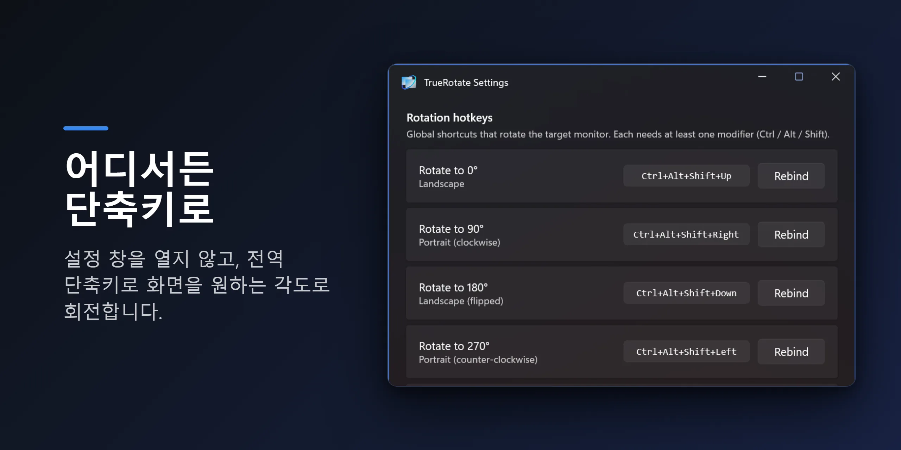
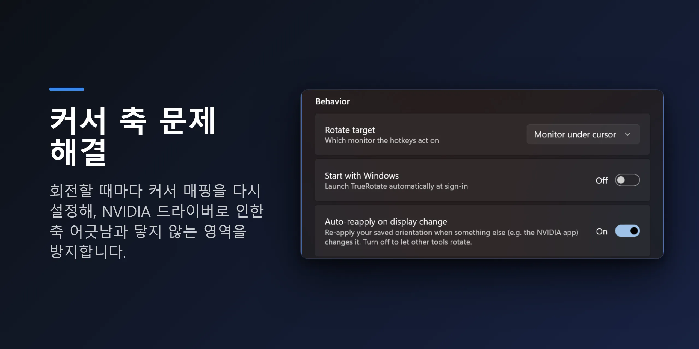
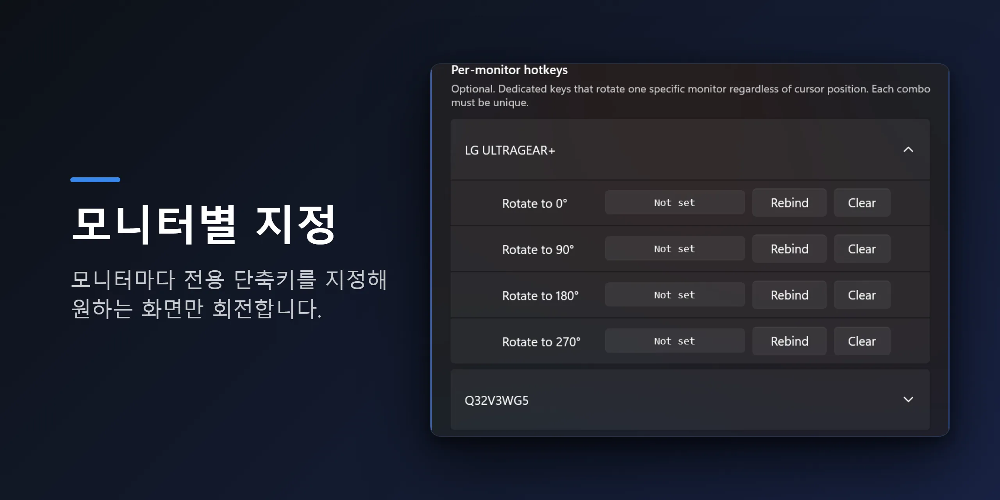

NVIDIA 화면 회전 버그
NVIDIA 시스템에서 모니터를 세로로 돌렸더니 마우스가 여전히 가로인 것처럼 움직이나요? 커서를 옆으로 밀면 위아래로 가고 — 포인터가 반대 방향으로 움직이며, 화면 일부는 커서가 닿지 않는 데드존이 됩니다.
보통 NVIDIA 앱이나 제어판이 디스플레이 설정을 바꾼 직후 시작되고, 재부팅해도 고쳐지지 않습니다. 잘 알려진 NVIDIA 드라이버 버그이지, 당신이 뭘 잘못한 게 아닙니다.
TrueRotate는 이렇게 해결합니다
TrueRotate는 회전할 때마다 Windows CCD(디스플레이 연결·구성) API로 디스플레이 모드를 강제로 다시 열어 커서의 좌표 매핑을 재구성합니다. 엉뚱한 축·데드존 현상이 아예 나타나지 않습니다.
전역 단축키나 트레이 메뉴로 어떤 모니터든 0°, 90°, 180°, 270°로 회전하세요. TrueRotate로만 돌리면 멀티모니터·멀티 GPU 환경에서도 마우스가 모든 화면에서 정상적으로 움직입니다.
기능
전역 회전 단축키
기본 Ctrl+Alt+Shift+화살표, 자유롭게 재설정. 설정을 열지 않고 어디서든 회전합니다 — Windows·NVIDIA의 화면 회전 단축키가 안 될 때의 대안입니다.
NVIDIA 축 버그 해결
회전할 때마다 커서를 재매핑해 엉뚱한 축·데드존이 다시 생기지 않습니다.
모니터별 단축키
각 디스플레이에 커서 위치와 무관한 전용 회전 키를 지정할 수 있습니다.
원키 순환
단축키 하나로 0 → 90 → 180 → 270을 차례로 순환합니다.
자동 재적용
NVIDIA 제어판 같은 다른 앱이 방향을 바꿔도 저장한 방향으로 되돌립니다.
깔끔하고 조용함
Windows 시작 시 실행, Fluent(WinUI 3) 설정, 7개 언어. 광고·추적 없음.
미리 보기



기본 단축키
| 단축키 | 회전 |
|---|---|
| Ctrl+Alt+Shift+↑ | 0° — 가로 |
| Ctrl+Alt+Shift+→ | 90° — 세로 |
| Ctrl+Alt+Shift+↓ | 180° — 가로(상하 반전) |
| Ctrl+Alt+Shift+← | 270° — 세로(반대) |
기본적으로 단축키는 커서가 있는 모니터를 회전합니다. 모든 단축키는 설정에서 바꿀 수 있습니다.
자주 묻는 질문
엔비디아가 아닌 GPU(AMD·인텔)에서도 되나요?
네. 화면 회전은 Windows 표준 방식으로 동작해 모든 GPU에서 작동합니다. 마우스 축이 어긋나는 증상은 주로 NVIDIA에서 나타나지만, TrueRotate는 어떤 GPU에서든 회전할 때마다 커서를 다시 맞춰줍니다.
회전한 뒤 마우스가 반대 방향으로 움직이는 것도 고쳐지나요?
네, 그게 TrueRotate의 핵심입니다. 회전할 때마다 커서 좌표를 다시 매핑해서, 세로 모니터에서 마우스가 가로처럼 움직이거나 커서가 닿지 않는 데드존이 생기는 문제가 사라집니다.
단축키를 바꾸거나 모니터마다 따로 지정할 수 있나요?
네. 모든 회전 단축키는 설정에서 자유롭게 바꿀 수 있고, 각 모니터에 전용 단축키를 지정할 수도 있습니다.
광고나 데이터 수집이 있나요?
없습니다. 광고도, 추적도 없습니다. Windows 시작 시 자동 실행 여부도 직접 켜고 끌 수 있습니다.